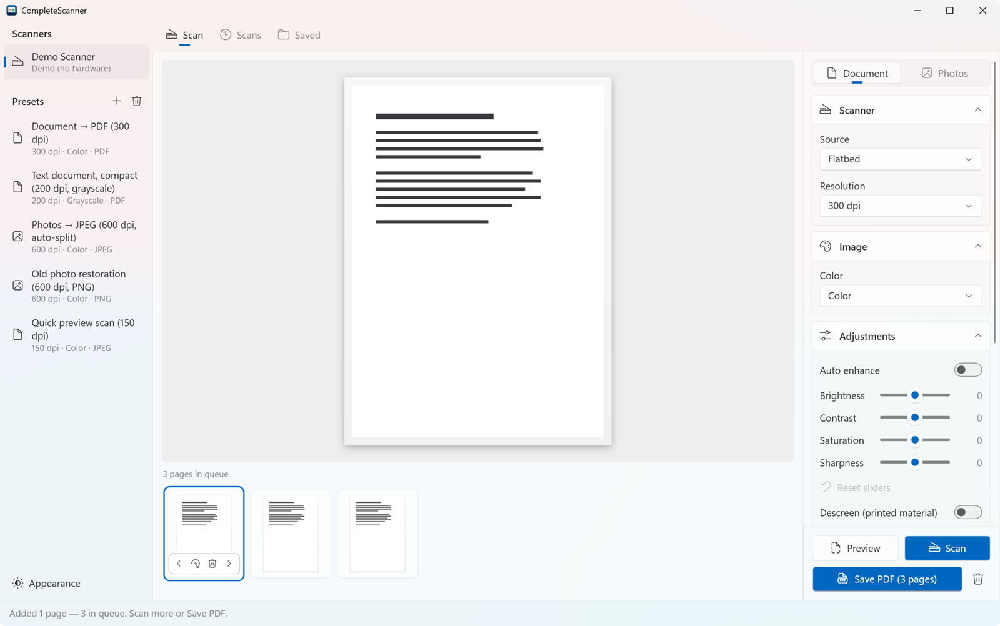

Paperwork into one searchable PDF
macOS + WindowsChoose Document, then press Scan for each page. Pages wait in a queue where you can put them in order, turn them a quarter turn or drop one. Save PDF writes them as one file. Searchable PDF is on from the start: the app adds an invisible layer of recognized text, so you can select words and find them with search.
- Prefer one file per scan? Save each scan straight away as PDF, JPEG, PNG or TIFF.
- Document feeder: a stack goes through in one go. If the paper jams or the connection drops, the pages already scanned are kept and the app tells you why it stopped.
- Text recognition uses Apple Vision on the Mac, which picks the language by itself, and Windows OCR on Windows, which needs a Windows OCR language pack.
